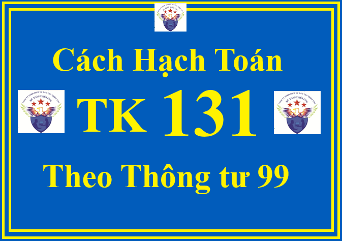

Hướng dẫn cách định khoản hạch toán Tài khoản 131 - Phải thu của khách hàng theo Thông tư 99/2025/TT-BTC hướng dẫn Chế độ kế toán doanh nghiệp (áp dụng từ ngày 01/01/2026, thay thế Thông tư 200)
Tài khoản 131 - Phải thu của khách hàng: dùng để phản ánh các khoản nợ phải thu của khách hàng (là khoản nợ phải thu mà quyền thu tiền chỉ phụ thuộc vào yếu tố thời gian) và tình hình thanh toán các khoản nợ phải thu của doanh nghiệp với khách hàng về tiền bán sản phẩm, hàng hóa, BĐSĐT, TSCĐ, các khoản đầu tư tài chính, cung cấp dịch vụ.
Tài khoản 131 này còn dùng để phản ánh các khoản phải thu của người nhận thầu XDCB với người giao thầu về khối lượng công tác XDCB đã hoàn thành.
1. Một vài các nguyên tắc kế toán của TK 131 Phải thu của khách hàng theo Thông tư 99
+ Khoản phải thu của khách hàng cần được hạch toán chi tiết cho từng đối tượng, từng nội dung phải thu, theo dõi chi tiết kỳ hạn thu hồi (từ 12 tháng trở xuống hay trên 12 tháng kể từ thời điểm kết thúc kỳ kế toán) và ghi chép theo từng lần thanh toán. Đối tượng phải thu là các khách hàng có quan hệ kinh tế với doanh nghiệp về mua sản phẩm, hàng hóa, nhận cung cấp dịch vụ, kể cả TSCĐ, BĐSĐT, các khoản đầu tư tài chính.
+ Bên giao ủy thác xuất khẩu ghi nhận trong tài khoản này đối với các khoản phải thu từ bên nhận ủy thác xuất khẩu về tiền bán hàng xuất khẩu như các giao dịch bán hàng, cung cấp dịch vụ thông thường.
+ Khi lập Báo cáo tài chính, doanh nghiệp phải tiến hành phân loại các khoản nợ phải thu, các khoản nợ phải thu có thể được trả đúng hạn, bị quá hạn hoặc chưa quá hạn nhưng không có khả năng thu hồi hoặc khó có khả năng thu hồi... để có biện pháp xử lý đối với khoản nợ phải thu khó đòi và trích lập dự phòng nợ phải thu khó đòi theo quy định.
+ Khoản phải thu của khách hàng cần được hạch toán chi tiết cho từng đối tượng, từng nội dung phải thu, theo dõi chi tiết kỳ hạn thu hồi (từ 12 tháng trở xuống hay trên 12 tháng kể từ thời điểm kết thúc kỳ kế toán) và ghi chép theo từng lần thanh toán. Đối tượng phải thu là các khách hàng có quan hệ kinh tế với doanh nghiệp về mua sản phẩm, hàng hóa, nhận cung cấp dịch vụ, kể cả TSCĐ, BĐSĐT, các khoản đầu tư tài chính.
+ Bên giao ủy thác xuất khẩu ghi nhận trong tài khoản này đối với các khoản phải thu từ bên nhận ủy thác xuất khẩu về tiền bán hàng xuất khẩu như các giao dịch bán hàng, cung cấp dịch vụ thông thường.
+ Khi lập Báo cáo tài chính, doanh nghiệp phải tiến hành phân loại các khoản nợ phải thu, các khoản nợ phải thu có thể được trả đúng hạn, bị quá hạn hoặc chưa quá hạn nhưng không có khả năng thu hồi hoặc khó có khả năng thu hồi... để có biện pháp xử lý đối với khoản nợ phải thu khó đòi và trích lập dự phòng nợ phải thu khó đòi theo quy định.
2. Kết cấu và nội dung phản ánh của TK 131 Phải thu của khách hàng theo Thông tư 99
| Bên Nợ: | Bên Có: |
|
- Số tiền phải thu của khách hàng phát sinh trong kỳ khi bán sản phẩm, hàng hóa, BĐS đầu tư, TSCĐ, dịch vụ, các khoản đầu tư tài chính; - Số tiền thừa trả lại cho khách hàng; - Đánh giá lại các khoản phải thu của khách hàng là khoản mục tiền tệ có gốc ngoại tệ (trường hợp tỷ giá ngoại tệ tăng so với đơn vị tiền tệ trong kế toán). |
- Số tiền khách hàng đã trả nợ; - Số tiền đã nhận ứng trước, trả trước của khách hàng; - Doanh thu của số hàng đã bán bị người mua trả lại (có thuế GTGT hoặc không có thuế GTGT); - Số chiết khấu thanh toán, chiết khấu thương mại, giảm giá hàng bán cho người mua; - Đánh giá lại các khoản phải thu của khách hàng là khoản mục tiền tệ có gốc ngoại tệ (trường hợp tỷ giá ngoại tệ giảm so với đơn vị tiền tệ trong kế toán). |
|
Số dư bên Nợ: Số tiền còn phải thu của khách hàng tại thời điểm kết thúc kỳ kế toán. |
Tài khoản này có thể có số dư bên Có. Số dư bên Có phản ánh số tiền nhận trước hoặc số đã thu nhiều hơn số phải thu của khách hàng chi tiết theo từng đối tượng cụ thể. Khi lập Báo cáo tình hình tài chính, doanh nghiệp lấy số dư chi tiết theo từng đối tượng phải thu của tài khoản này để ghi vào cả hai chỉ tiêu bên "Tài sản" và bên "Nguồn vốn". |
3. Cách định khoản hạch toán các nghiệp vụ liên quan đến Tài khoản 131 - Phải thu của khách hàng theo Thông tư 99/2025/TT-BTC
3.1. Khi bán sản phẩm, hàng hóa, cung cấp dịch vụ chưa thu được ngay bằng tiền (kể cả các khoản phải thu về tiền bán hàng xuất khẩu của bên giao ủy thác), doanh nghiệp ghi nhận doanh thu, ghi:
a) Đối với sản phẩm, hàng hóa, dịch vụ, BĐSĐT thuộc đối tượng chịu thuế gián thu (thuế GTGT, thuế tiêu thụ đặc biệt, thuế xuất khẩu, thuế bảo vệ môi trường), doanh nghiệp phản ánh doanh thu bán hàng và cung cấp dịch vụ theo giá bán chưa có thuế, các khoản thuế gián thu phải nộp được tách riêng theo từng loại thuế ngay khi ghi nhận doanh thu, ghi:
Nợ TK 131 - Phải thu của khách hàng (tổng giá thanh toán)
Có TK 511 - Doanh thu bán hàng và cung cấp dịch vụ (giá chưa có thuế)
Có TK 333 - Thuế và các khoản phải nộp Nhà nước.
Có TK 333 - Thuế và các khoản phải nộp Nhà nước.
b) Trường hợp các khoản thuế gián thu phải nộp không tách riêng ngay theo từng loại, doanh nghiệp ghi nhận doanh thu bao gồm cả thuế phải nộp. Định kỳ, doanh nghiệp xác định nghĩa vụ thuế phải nộp và ghi giảm doanh thu, ghi:
Nợ TK 511 - Doanh thu bán hàng và cung cấp dịch vụ
Có TK 333 - Thuế và các khoản phải nộp Nhà nước.
3.2. Kế toán hàng bán bị khách hàng trả lại:
Nợ TK 521 - Các khoản giảm trừ doanh thu
Nợ TK 333 - Thuế và các khoản phải nộp Nhà nước (số thuế GTGT của hàng bán bị trả lại, chi tiết cho từng loại thuế) (nếu có)
Có TK 131 - Phải thu của khách hàng.
3.3. Kế toán chiết khấu thương mại và giảm giá hàng bán
a) Trường hợp số tiền chiết khấu thương mại, giảm giá hàng bán đã ghi ngay trên hóa đơn bán hàng, kế toán phản ánh doanh thu theo giá đã trừ chiết khấu, giảm giá (ghi nhận theo doanh thu thuần) và không phản ánh riêng số chiết khấu, giảm giá;
b) Trường hợp trên hóa đơn bán hàng chưa thể hiện số tiền chiết khấu thương mại, giảm giá hàng bán do khách hàng chưa đủ điều kiện để được hưởng hoặc chưa xác định được số phải chiết khấu, giảm giá thì doanh thu ghi nhận theo giá chưa trừ chiết khấu (doanh thu gộp). Sau thời điểm ghi nhận doanh thu, nếu khách hàng đủ điều kiện được hưởng chiết khấu, giảm giá thì doanh nghiệp phải ghi nhận riêng khoản chiết khấu giảm giá để định kỳ điều chỉnh giảm doanh thu, ghi:
Nợ TK 521 - Các khoản giảm trừ doanh thu
Nợ TK 333 - Thuế và các khoản phải nộp Nhà nước (số thuế của hàng giảm giá, chiết khấu thương mại) (nếu có)
Có TK 131 - Phải thu của khách hàng (tổng số tiền giảm giá).
3.4. Số chiết khấu thanh toán phải trả cho người mua do người mua thanh toán tiền mua hàng trước thời hạn quy định, trừ vào khoản nợ phải thu của khách hàng, ghi:
Nợ các TK 111, 112,...
Nợ TK 635 - Chi phí tài chính (Số tiền chiết khấu thanh toán)
Có TK 131 - Phải thu của khách hàng.
3.5. Nhận được tiền do khách hàng trả (kể cả tiền lãi của số nợ - nếu có), nhận tiền ứng trước của khách hàng theo hợp đồng bán hàng hoặc cung cấp dịch vụ, ghi:
Nợ các TK 111, 112,...
Có TK 131 - Phải thu của khách hàng
Có TK 515 - Doanh thu hoạt động tài chính (phần tiền lãi).
Có TK 515 - Doanh thu hoạt động tài chính (phần tiền lãi).
3.6. Phương pháp kế toán các khoản phải thu của nhà thầu đối với khách hàng liên quan đến hợp đồng xây dựng:
a) Trường hợp hợp đồng xây dựng quy định nhà thầu được thanh toán theo tiến độ kế hoạch:
- Khi kết quả thực hiện hợp đồng xây dựng được ước tính một cách đáng tin cậy, nhà thầu căn cứ vào chứng từ phản ánh doanh thu tương ứng với phần công việc đã hoàn thành (không phải hóa đơn) do nhà thầu tự xác định, ghi:
Nợ TK 337 - Thanh toán theo tiến độ kế hoạch hợp đồng xây dựng
Có TK 511 - Doanh thu bán hàng và cung cấp dịch vụ.
- Căn cứ vào hóa đơn được lập theo tiến độ kế hoạch để phản ánh số tiền khách hàng phải trả theo tiến độ kế hoạch đã ghi trong hợp đồng, ghi:
Nợ TK 131 - Phải thu của khách hàng
Có TK 337 - Thanh toán theo tiến độ kế hoạch hợp đồng xây dựng
Có TK 3331 - Thuế GTGT phải nộp (33311) (nếu có).
Có TK 3331 - Thuế GTGT phải nộp (33311) (nếu có).
b) Trường hợp hợp đồng xây dựng quy định nhà thầu được thanh toán theo giá trị khối lượng thực hiện, khi kết quả thực hiện hợp đồng xây dựng được xác định một cách đáng tin cậy và được khách hàng xác nhận, doanh nghiệp phải ghi nhận doanh thu trên cơ sở phần công việc đã hoàn thành được khách hàng xác nhận, ghi:
Nợ TK 131 - Phải thu của khách hàng
Có TK 511 - Doanh thu bán hàng và cung cấp dịch vụ
Có TK 3331 - Thuế GTGT phải nộp (33311) (nếu có).
Có TK 3331 - Thuế GTGT phải nộp (33311) (nếu có).
c) Khoản tiền thưởng thu được từ khách hàng trả phụ thêm cho nhà thầu khi thực hiện hợp đồng đạt hoặc vượt một số chỉ tiêu cụ thể đã được ghi trong hợp đồng, ghi:

Nợ TK 131 - Phải thu của khách hàng
Có TK 511 - Doanh thu bán hàng và cung cấp dịch vụ
Có TK 3331 - Thuế GTGT phải nộp (33311) (nếu có).
Có TK 3331 - Thuế GTGT phải nộp (33311) (nếu có).
d) Khoản bồi thường thu được từ khách hàng hay các bên khác để bù đắp cho các chi phí không bao gồm trong giá trị hợp đồng (như sự chậm trễ, sai sót của khách hàng và các tranh chấp về các thay đổi trong việc thực hiện hợp đồng), ghi:
Nợ TK 131 - Phải thu của khách hàng
Có TK 511 - Doanh thu bán hàng và cung cấp dịch vụ
Có TK 3331 - Thuế GTGT phải nộp (33311) (nếu có).
Có TK 3331 - Thuế GTGT phải nộp (33311) (nếu có).
đ) Khi nhận được tiền thanh toán khối lượng công trình hoàn thành từ khách hàng, ghi:
Nợ các TK 111, 112,...
Có TK 131 - Phải thu của khách hàng.
3.7. Trường hợp khách hàng không thanh toán bằng tiền mà thanh toán bằng hàng (theo phương thức hàng đổi hàng), căn cứ vào giá trị vật tư, hàng hóa nhận trao đổi (tính theo giá trị hợp lý ghi trong Hóa đơn GTGT hoặc Hóa đơn bán hàng của khách hàng) trừ vào số nợ phải thu của khách hàng, ghi:
Nợ các TK 152, 153, 156,…
Nợ TK 133 - Thuế GTGT được khấu trừ (nếu có)
Có TK 131 - Phải thu của khách hàng.
Chi tiết về cách hạch toán TK 156 thì Công ty đào tạo Kế Toán Diệu Tâm mời các bạn tham khảo tại đây:
Cách hạch toán TK 156 hàng hóa theo Thông tư 99
3.8. Trường hợp phát sinh khoản nợ phải thu không có khả năng thu hồi thì phải xử lý tài chính theo quy định. Căn cứ vào quyết định của cấp có thẩm quyền về việc xử lý xóa sổ khoản nợ phải thu, ghi:
Nợ TK 229 - Dự phòng tổn thất tài sản (2293) (số đã lập dự phòng)
Nợ TK 642 - Chi phí quản lý doanh nghiệp (số chưa lập dự phòng)
Có TK 131 - Phải thu của khách hàng.
Đồng thời mở sổ theo dõi khoản nợ khó đòi đã xử lý nhằm tiếp tục theo dõi trong thời hạn quy định để có thể truy thu người nợ số tiền đó.3.9. Bên nhận ủy thác xuất nhập khẩu phản ánh khoản phải thu về phí ủy thác xuất nhập khẩu được nhận từ bên giao ủy thác, căn cứ vào hóa đơn, ghi:
Nợ TK 131 - Phải thu của khách hàng
Có TK 511 - Doanh thu bán hàng và cung cấp dịch vụ
Có TK 3331 - Thuế GTGT phải nộp (33311).
Có TK 3331 - Thuế GTGT phải nộp (33311).